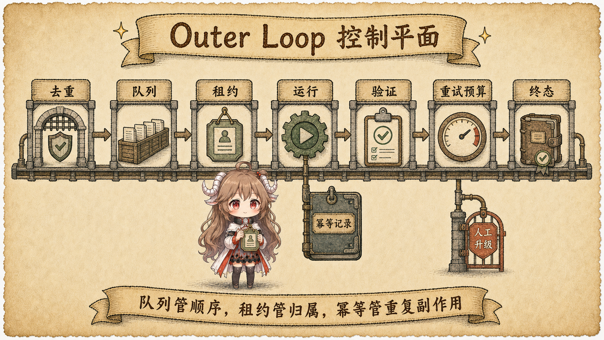
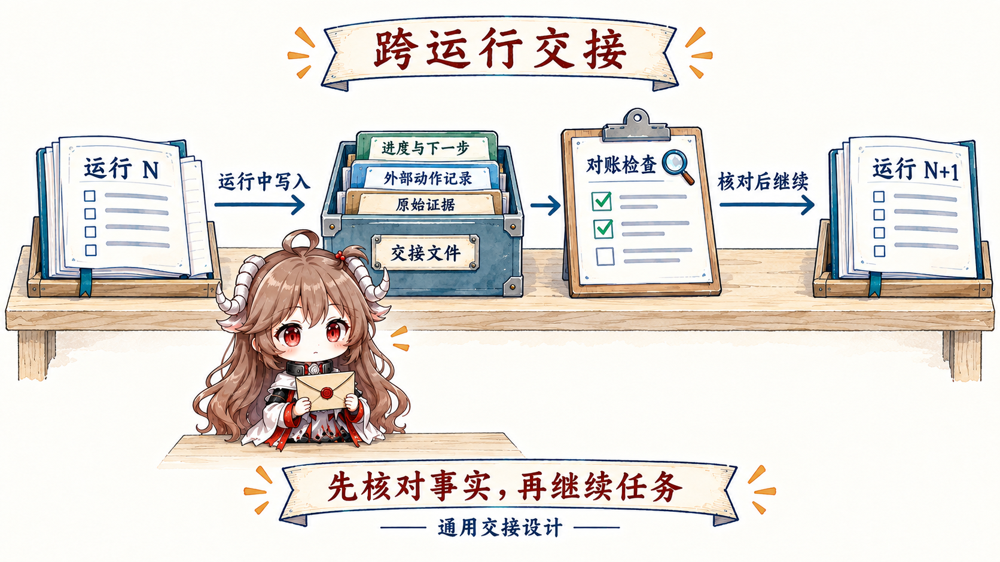

长任务很少和某个聊天窗口同时开始、同时结束。任务可能等待 CI、review 或授权，也可能因为时间和环境重启被拆成几次执行。要让后一次真正接住前一次，系统必须把“任务”从“这次对话”里拿出来。
读完这篇，你应该能回答：Outer Loop 是什么、为什么需要、最小版本有哪些部分；任务中断、并发处理和外部动作状态不明时分别怎样处理。
资料说明：本文从 OpenAI 的 Harness engineering 与 Symphony，以及 Anthropic 的 long-running harness 和 Managed agents 中抽象跨运行机制。篇末社区教程只补充教学视角，不作为产品行为定义。
一、先从失败故事看懂 Outer Loop
1.1 一个没有 Outer Loop 的任务怎样失败
第一次运行里，Agent 找到支付测试的失败原因，改了代码，但还没来得及运行完整验证就结束了。第二次运行启动时只收到最初任务，不知道前一次改过什么，于是重新调查；它看到创建 PR 的请求超时，以为失败，又创建了第二个 PR。
模型并不一定更笨。真正缺失的是一套跨运行控制：任务做到哪一步？哪次运行现在负责它？什么结果才能结束？中断后从哪里继续？一个外部动作究竟成功还是失败？
1.2 先认识四个最小概念
- 任务卡（work item）：真正要完成的长期工作，例如“支付测试修复并通过 review”。它可以存在几小时或几天。
- 一次运行（run）：Agent 针对任务卡进行的一次有限尝试。它可能完成，也可能中断或等待。
- Agent Loop：一次运行内部“想一步、做一步、看结果”的循环。
- Outer Loop：包在多次运行外面，负责让同一张任务卡被触发、接手、验证、恢复和重试的控制流程。
一句话记住：Agent Loop 管一次运行怎样前进；Outer Loop 管任务怎样跨多次运行活下去，直到完成或交给人。
1.3 一张任务卡怎样从进入系统走到完成
- 创建任务：测试失败事件或人工请求生成任务卡，写清目标和完成条件。
- 选择任务：系统从等待列表中挑出当前可以处理、优先级合适的一项。
- 启动运行：把目标、可用工具、权限和上次进度交给 Agent。
- 持续保存：运行过程中记录确认事实、代码改动、测试结果和未完成事项，而不是等最后才保存。
- 独立验证：CI、review 或业务检查确认结果；Agent 自己说“完成”只是一条候选结论。
- 决定下一步：验证通过就结束；失败就带着新证据再运行；缺权限就等待；多次尝试无效就交给人。
这六步才是主干。后面的 queue、lease、checkpoint 和 idempotency，都是在任务变多、运行会中断或存在外部动作后，为这条主干补上的保护机制。
二、把任务卡变成可运行的控制流程
2.1 任务为什么要离开聊天，成为独立任务卡
聊天记录适合保留对话，却不是任务本身。任务卡最先需要的只有稳定编号、目标、完成条件、当前状态、已完成和下一步。任务规模扩大后，再逐步加入优先级、依赖、当前处理者、尝试次数和外部对象引用。Run 只是任务卡上的一次处理记录，不应取代任务卡。
任务：修复支付模块回归
状态：处理中
完成条件：支付测试通过，review 接受
已经确认：缺少过期订单校验
已经修改：payment.go
下一步：运行支付测试任务卡的最新版本保存在 Outer Loop 使用的持久化存储中，而不是某次 Prompt 或聊天历史里。启动 Run 时，系统只把当前目标、权限和进度放进 Agent 的输入；Run 通过 checkpoint 写回新事实；verifier 通过后，Outer Loop 才把任务状态从“待验证”改为“完成”。后续 Run 和人类 reviewer 都从这张更新后的任务卡与 artifact 引用继续。
2.2 把刚才的六步变成可运行的责任
这六项不是只执行一次的直线流水线。保存进度从 run 启动前就开始，并贯穿执行与最终交接；否则进程若在验证前崩溃，系统恰好没有可恢复事实。后文会逐个解释并发领取、checkpoint 和外部动作记录，先用普通语言记住表里的责任即可。
| 阶段 | 控制问题 | 必须留下的事实 |
|---|---|---|
| Trigger | 什么事件或人工请求创建任务？ | 任务来源、是否重复、时间 |
| Select work | 现在哪项任务可以开始？ | 选择理由、当前处理者 |
| Launch run | 本次 Agent 得到什么目标、工具和进度？ | 运行配置、输入版本、上次进度 |
| Verify | 哪些独立检查可以接受结果？ | 检查证据、失败原因 |
| Persist | 哪些进度和外部变化必须保存？ | 恢复起点、动作记录 |
| Retry / next | 结束、等待、换策略还是找人？ | 决定理由、剩余尝试 |
2.3 怎样防止两个执行者同时写同一任务
想象两名执行者同时从等待列表里拿到了同一张支付任务卡，两边都开始改代码。等待列表只能决定谁先看到任务，还需要一种“限时领取”机制：某名执行者在一段时间内取得处理权，持续证明自己还在工作；超过时间后，任务才能被别人重新领取。这种限时处理权叫 lease。
真实系统里的 Webhook 可能重复，定时任务可能重叠，worker 也可能崩溃。没有这套领取与过期规则，同一任务会被并发修改，或在执行者死亡后永久卡住。

- Deduplication：相同外部事件只创建一个 work item。
- Lease：同一时刻只有一个 run 可以写任务状态；只读调查可另设并行策略。
- Heartbeat：区分长运行与已死亡 worker。
- Fencing token：旧 lease 即使迟到，也不能覆盖新 worker 写入的状态。
- Backpressure：根据资源、风险和人工审查容量限制启动。
queued
-- worker-A claim, fence=1 --> running(A)
-- lease expires -----------> claimable
-- worker-B claim, fence=2 --> running(B)
complete(worker-A, fence=1) # rejected: stale lease
complete(worker-B, fence=2) # accepted三、进阶：跨运行恢复、重试与副作用
3.1 中断以后，下一次运行怎样接上
Checkpoint 就是下一次运行可以恢复的已保存起点。回到支付故事：Run 1 在结束前写下目标、已确认原因、payment.go 的修改、尚未执行的测试和日志引用；Run 2 启动后先核对文件与引用是否仍然有效，再从“运行支付测试”继续，而不是重新调查。
Anthropic 的 long-running harness 经验强调，让后续 agent 能从明确进展文件、git 状态和干净的任务切片继续。这样的 handoff 同时服务机器与人：结构化字段保证恢复，叙述记录决策与异常；原始 artifact 保留证据。

| Handoff 字段 | 回答的问题 | 恢复检查 |
|---|---|---|
| Goal / done | 要完成什么？ | 是否仍有效 |
| Confirmed facts | 已经知道什么？ | 来源是否可访问、新鲜 |
| Effects | 已经改了什么外部状态？ | 与真实世界对账 |
| Attempts | 哪些路径失败、为什么？ | 避免同策略重复 |
| Open / next | 阻塞点和最小下一步？ | 能力与权限是否足够 |
| Artifacts | 日志、diff、测试和截图在哪里？ | 引用是否完整 |
3.2 失败后不是简单地“再试一次”
Inner loop 的一次工具重试与 outer loop 的整次 run 重试不同。后者成本更高，也更容易重复副作用。每次重新启动前要问：失败类别是什么？新 run 会得到什么变化？旧效果是否已对账？还剩多少预算？如果答案只有“再试一次”，就不该自动重试。
重试预算应随 work item 持久化，不能在 worker 重启后归零。可以按错误类别设置不同策略：基础设施短暂错误自动退避；权限阻塞直接等待审批；同一 invariant 连续失败转人工；高风险外部写在状态不明时先 reconcile，不能重放。
3.3 请求超时，不等于外部动作没有发生
“创建 PR”“退款”“发通知”都可能出现请求成功但响应丢失。Outer loop 若只看本地超时，会再次执行。每个可重试副作用应携带稳定 idempotency key，并把 proposed、started、committed、observed 状态写入动作状态日志。恢复时先查询外部系统，再决定继续、补偿或完成。
effect_key = "issue-1842:create-pr:v3"
status log: proposed → started → unknown
remote: PR #41 already exists
reconcile(effect_key)
→ find PR #41
→ status log: committed → observed
→ do not create PR #42timeout → retry → 两个 PR；安全流程是 timeout → reconcile → 复用已有 PR。因此副作用发生前就必须持久化，不是 verify 之后才记录。- 把“我调用过”与“世界已经改变”分开记录。
- 优先使用外部 API 的幂等键；没有时用业务唯一键和对账查询。
- 补偿动作也要被建模和审计，不能假设所有效果可回滚。
- 未知状态不是失败重试，而是 reconciliation 状态。
3.4 什么时候必须把任务交给人
OpenAI Harness engineering 强调人类注意力稀缺。Outer loop 应只在需要人的判断时打断：目标冲突、高风险授权、无法自动判定的质量，或是否继续投入预算。系统要给出精简但充分的说明：发生了什么、已验证什么、有哪些选项与影响、推荐动作和截止时间。
四、复盘：从最小版本逐步加保护
| 问题 | 最低机制 | 没有它会怎样 |
|---|---|---|
| 重复事件会创建重复工作吗？ | dedupe key | 并发重复副作用 |
| 哪个 worker 当前可以写任务？ | lease + fencing | 双写或永久卡住 |
| Run 结束后怎样判断完成？ | 独立 verifier | 把 final 当结果真值 |
| 下一次 run 从什么继续？ | checkpoint + artifacts | 丢状态、重做调查 |
| 重试会改变什么？ | error class + persistent budget | 无限烧钱 |
| 外部效果状态不明怎么办？ | idempotency + action status log | 重复退款、PR 或通知 |
| 什么时候找人？ | escalation policy | 任务无人处理或人被频繁打断 |
Outer loop 把 run 变成了可运营的工作系统。但它仍需要一个外部真值来判断“verify”是否可信。最后一篇进入 Evals 与反馈：怎样测结果、定位失败层，并把证据变成下一次系统改动。
官方资料
- OpenAI：An open-source spec for Codex orchestration: Symphony
- OpenAI：Harness engineering
- Anthropic：Effective harnesses for long-running agents
- Anthropic：Managed agents